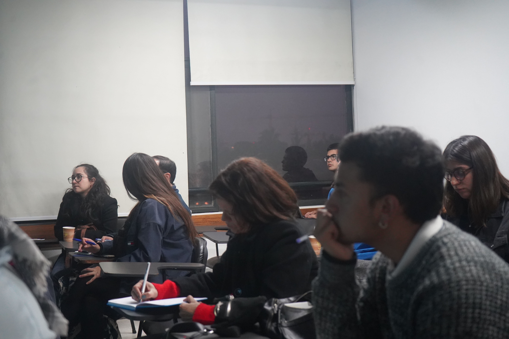
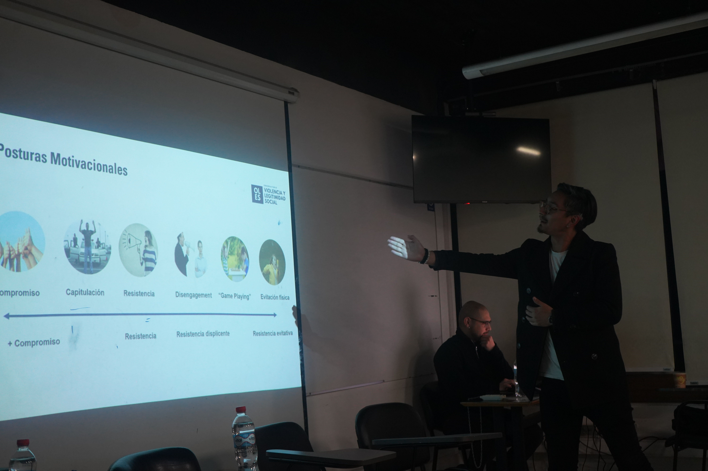

OLES en el XII Congreso chileno de sociología 2024
 Fuente de imagen: Universidad Alberto Hurtado
Fuente de imagen: Universidad Alberto Hurtado
Investigadoras e investigadores de OLES participaron en el XII Congreso chileno de sociología 2024 el día viernes 3 de mayo. Nuestro equipo expuso los avances de nuestros trabajos más recientes lo que permitió un diálogo con académicos y estudiantes sobre cómo desarrollar y proyectar la investigación en ciencias sociales sobre la relación entre policías y sociedad.
El congreso, organizado en colaboración entre la Universidad Diego Portales y la Universidad Alberto Hurtado, y respaldado por la Socio-RED y la Asociación Latinoamericana de Sociología, se desarrolló entre los días 2 y 4 de mayo en las instalaciones de ambas universidades. Contó con la participación de cientos de estudiantes y académicos que presentaron sus investigaciones y análisis sobre los cambios en la sociedad contemporánea y en la evolución de la sociología como disciplina.
El equipo OLES coordinó el Panel 14 Policías y sociedad en el Chile contemporáneo que buscó comunicar los resultados de investigaciones en curso de nuestro observatorio. Nuestra directora, Mónica Gerber (Psicología-UDP) expuso los hallazgos descriptivos de la más reciente encuesta producida por OLES, el Estudio de Percepciones de Seguridad y Policías en Chile (ESEP). En su presentación, dimos a conocer datos con representación a nivel nacional sobre las percepciones de la ciudadanía sobre las policías, las tendencias que actualmente pueden estar marcando esa relación, cuestiones que seguirán siendo observadas en el desarrollo de la segunda ola de esta encuesta longitudinal.

Luego, la profesora Macarena Orchard (Sociología-UDP) expuso los resultados más recientes de su estudio sobre el respeto hacia Carabineros en base a un trabajo cualitativo desarrollado en Santiago, Antofagasta y Temuco, proponiendo la distinción entre tipos de respeto y las tendencias actuales de esta dinámica clave en la relación entre ciudadanía y policías. Luego, la investigadora Ana Figueiredo (U Bernardo O’Higgins) expuso su proyecto de investigación sobre la relación entre carabineros y grupos desaventajados, trabajo en el que nos propuso un marco analítico común para pensar la relación entre carabineros y grupos atravesados por desigualdades de clase, raza y género.

Finalmente, el investigador Luciano Sáez (Ciencia Sociales, UDP) presentó una investigación sobre una aplicación de la teoría de las posturas motivacionales en la relación entre carabineros y ciudadanía desde un punto de vista cualitativo. Trabajo que nos permitió conocer las relaciones de distancia y cercanía que la ciudadanía moviliza en su relación con las policías.

Estas presentaciones generaron un enriquecedor debate entre los asistentes, brindando al equipo de OLES un valioso feedback para sus investigaciones.
Durante la mañana del viernes, el investigador Luciano Sáez presentó los avances de su investigación en curso titulada “Exceso y ausencia policial: percepciones sobre violencia y trato diferencial de Carabineros hacia diferentes grupos de la sociedad chilena”. En su exposición, abordó fenómenos como el under and over policing en la sociedad contemporánea, así como la percepción que distintos grupos ideológicos tienen sobre las fuerzas policiales.
En la misma jornada, Bruno Rojas (UCH), miembro del equipo de OLES, compartió los primeros resultados de un trabajo de campo sobre la politización de la inseguridad en el contexto de Antofagasta.
Estas presentaciones marcaron el cierre de una jornada intensa de trabajo y reflexión. Prometen continuar fomentando la investigación en el ámbito policial desde una perspectiva interdisciplinaria y multimétodo.

Bruno Rojas Soto
Magister en Ciencias Sociales
Licenciado en historia, Magister en Ciencias Sociales de la Universidad de Chile. Sus principales líneas de investigación se enmarcan tanto en la sociología moral y política como los estudios urbanos y migratorios. Sus intereses se centran en la relación entre sentimientos de injusticia y las percepciones sobre la política y las instituciones, la migración y las relaciones de convivencia en espacios urbanos, fronteras simbólicas y desigualdades sociales, sectores populares y su relación con la política. Actualmente es becario Fulbright, beneficio que le permitirá estudiar un PhD en Estados Unidos.
Matías Deneken
Sociólogo
Sociólogo, Magíster en Sociología y candidato a Magíster en Data Science. Actualmente desempeña labores en investigación social aplicada en el Centro CIIR y OLES, con temáticas vinculadas a interculturalidad y violencia. Dentro de sus méritos académicos fue Premio Universidad de Concepción, Becario ANID - Magíster Nacional y es beneficiario del programa Fulbright para iniciar un PhD en Estados Unidos.
Nicolás Tobar Jorquera
Sociólogo
Asistente cuantitativo de investigación en OLES. Sociólogo titulado de la Universidad de Chile. Sus principales líneas de investigación se enmarcan la teorías críticas, la aceleración social y la legitimidad de las instituciones políticas. También trabaja temas vinculados a las desigualdades digitales y teorías constitucionales.